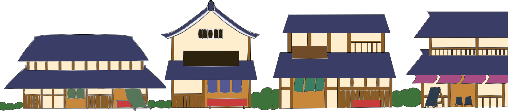
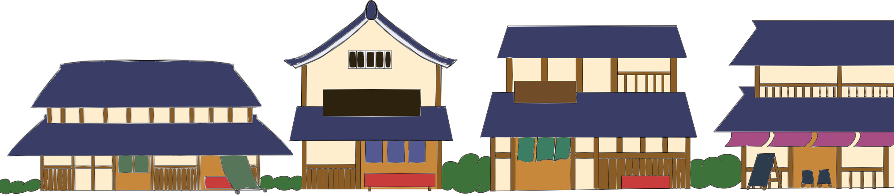

チンドンの歴史
- 1845年（弘化02年）
- 昔々ある所に飴屋の飴勝という男がおりました。 彼は竹でできた鳴り物と力強い声で人々を楽しませ、 大人気の存在になりました。
- ある日、飴勝の力強い声と集客力に目をつけた男が自分の店の宣伝もして欲しいとやってきました。 こうして、飴勝はちんどん屋の元祖として知られるようになりました。
- 1883年（明治16年）
- 彼の仕事は後継者である勇亀に引き継がれました。 勇亀は芝居の口上をまねて、「東西、トーザイ！」と大声で叫びながら、町中を練り歩く姿から「東西屋」と呼ばれ。それ以降路上広告業は、「東西屋」と呼ばれるようになった。
- 1885年（明治18年）
- 大阪出身の東西屋である秋田柳吉が東京で広告宣伝を行いました。彼は広目屋と名乗り、東西屋のスタイルにさらに音楽隊を加え、楽隊広告を生み出しました。彼のまねをする業者が増え、宣伝行列のことを広目屋というようになった。
- 1931年（昭和6年）
- 大正時代には「ちんどん太鼓」というものが考案されました。これは一人で様々な楽器を演奏できるように、鉦と太鼓を一緒にしたものでした。ここから東西屋や広目屋は「ちんどん屋」と呼ばれるようになったのです。
- 1935年（昭和10年）
- しかし、都市の近代化が進む中で、広告業界も大きく変わりました。当時の広告のトップ3は宛名広告、新聞折り込み、引き札でした。ちんどん屋は厳しい競争に直面しました。
- 1941年（昭和16年）
- 第二次世界大戦の影響でちんどん屋の活動禁止令が出てしまう。これにより大道芸も禁止されこれまで騒がしかった街は静かになってしまった。
- 1950年（昭和25年）
- 第二次世界大戦が終わり経済的には発展していくが、広告メディアはそれに追いつけなかった。ここでちんどん屋が再び静かな街に現れる。この頃にはブラスバンドのスネア・ドラムを持つ十人編成も登場し、街は再び活気を取り戻した。
- 〜現在
- このように、ちんどん屋の歴史は長く、様々な時代の変化と共に歩んできました。今でも時折、街中でちんどん屋の姿を見かけることがあります。彼らは古き良き伝統を守りながら、人々に喜びと楽しみを届ける存在として、大切にされています。